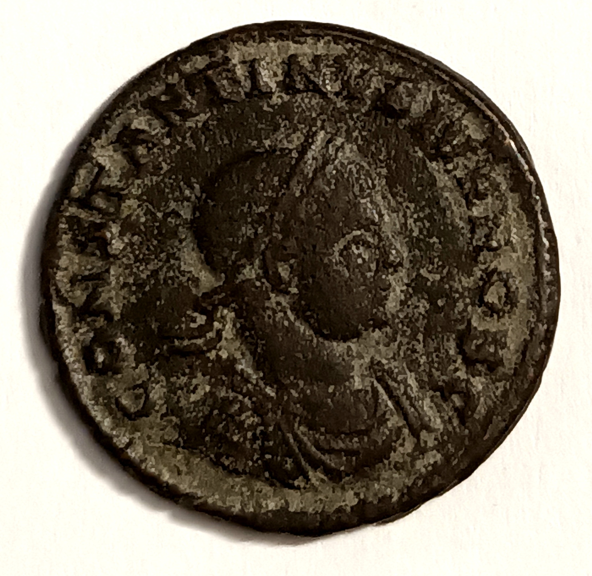
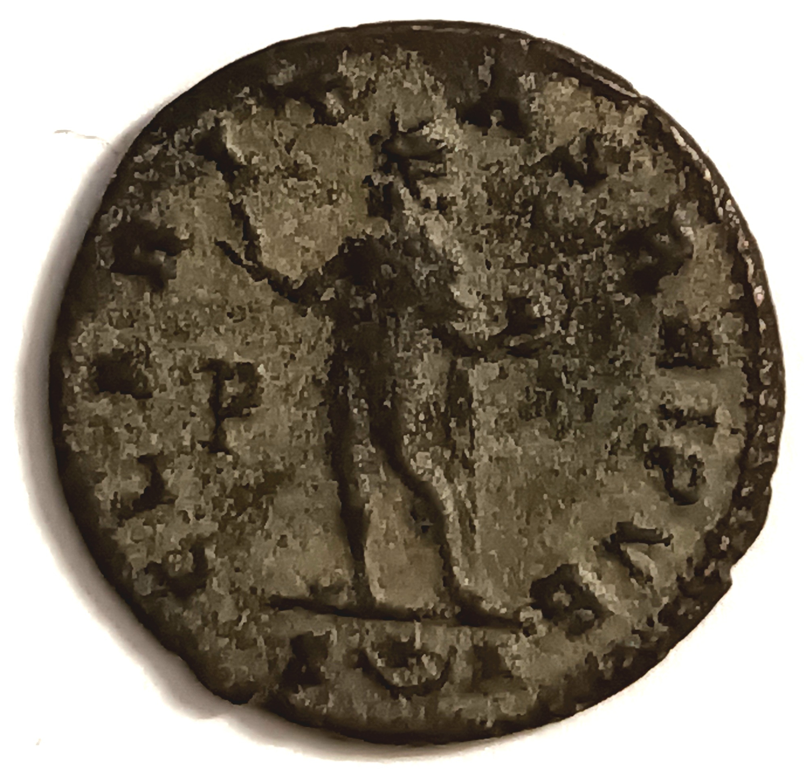

|


|
Nummus/Follis de Constantin II
- atelier : Arles
- année : 318
- métal : ?
- diamètre : ?
- masse : 3.06 g
- état : ?
|


|
Antoninien de Gallien
- atelier : Rome
- année : 260-268
- métal : billon
- diamètre : 21.5 mm
- masse : 4 g
- état : TTB, EF(40-45)
|


|
Antoninien de Postume
- atelier : Trèves ou Cologne
- année : 260-269
- métal : billon
- diamètre : 23 mm
- masse : 3,42 g
- état : TB+, VF(30-35)
|


|
Nummus de Constantin II
- atelier : Trèves
- année : ?
- métal : cuivre
- diamètre : 20 mm
- masse : 3,65 g
- état : SUP+, MS(60-62)
|


|
Follis de Crispus
- atelier : Aquilée
- année : 322
- métal : bronze
- diamètre : 18,9 mm
- masse : 3,38 g
- état : SPL, MS(63)
|